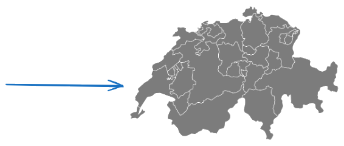
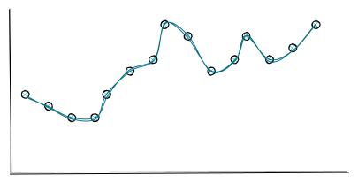
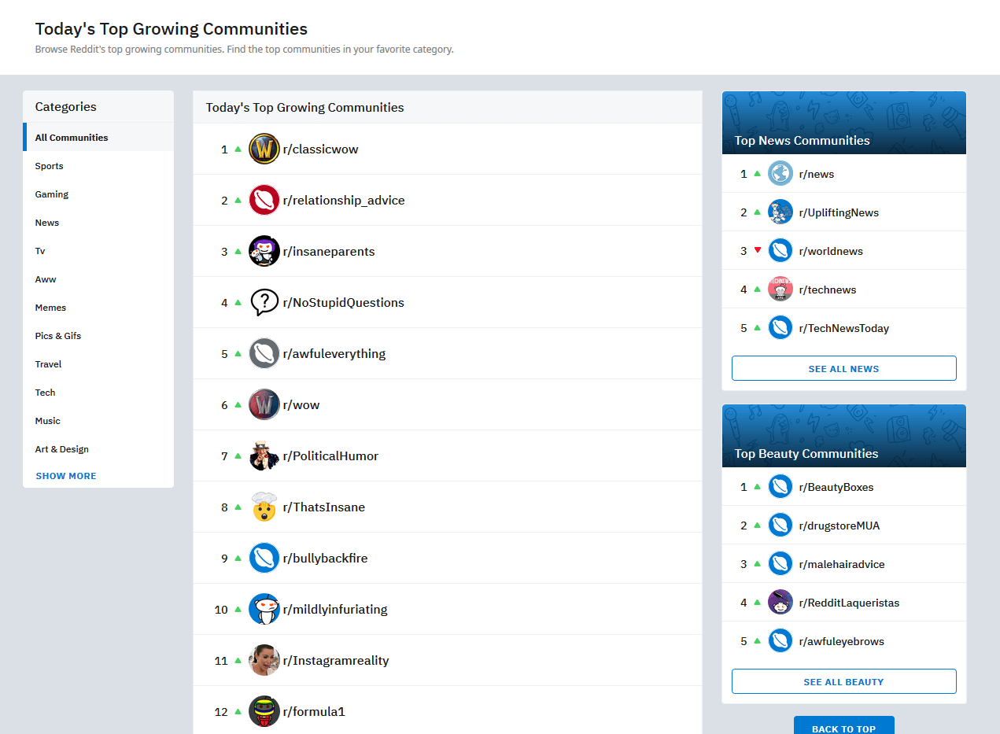
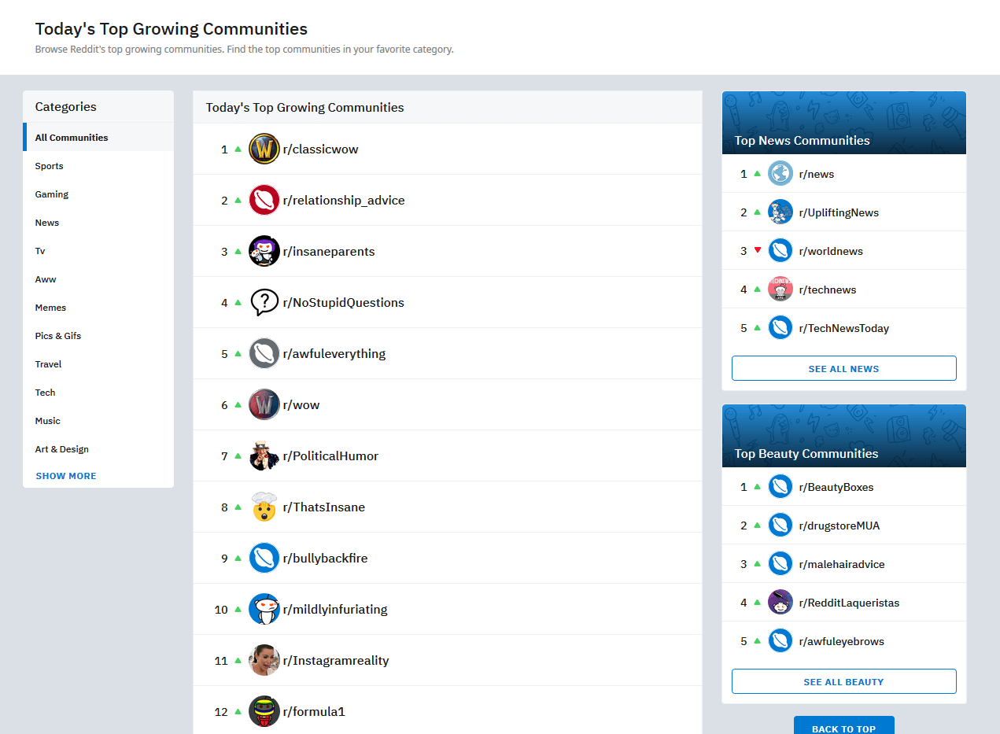
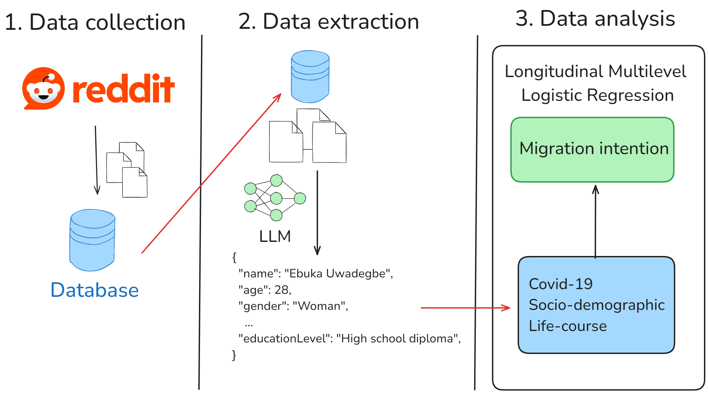
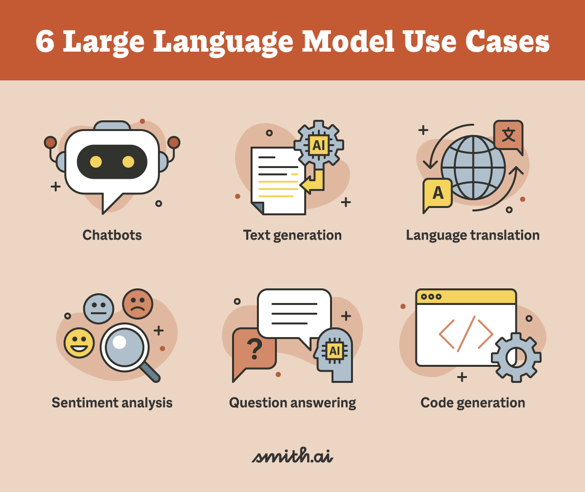
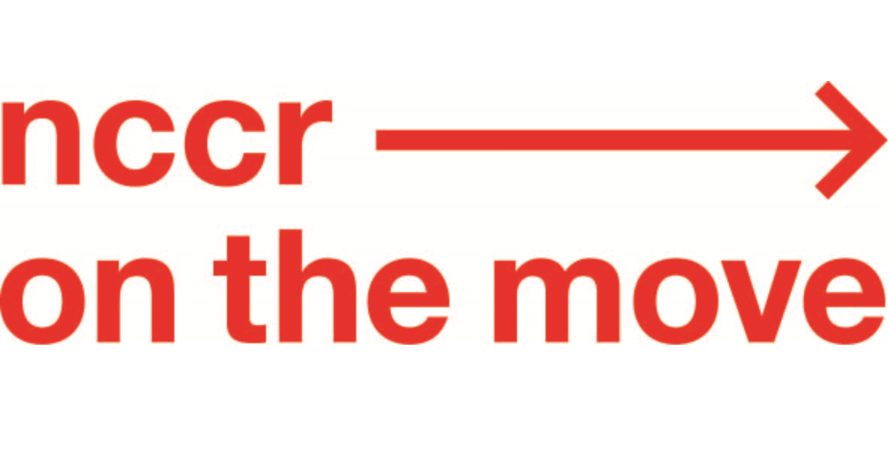

Migration Aspiration and Crisis in Redditors’ Trajectory
https://cyuhat.github.io/presentation_valencia/#/title-slide
Research question
- Central question:
- How do personal life trajectories and critical events influence individuals’ migration intentions to Switzerland over time?
- Key focus:
- Migration intention over time
- Life course perspective
- Methods (mixed):
- Quantitative: Longitudinal multilevel analysis
- Qualitative: Depend on the trajectories selected
Migration intention
Migration intention

Migration intention

Migration intention
2 years after:
70% indeed emigrated (Wanner, 2021)
24% - 36% indeed emigrated (Van Dalen & Henkens, 2008)
Factors (Bernard & Vidal, 2023; Kulu & Milewski, 2007):
Job opportunities
Birth
Social network
…
Research context
- Demographic scope (Findlay et al., 2015):
- Age groups, gender, family statuses, migrant groups, …
- Life course (Horowitz & Entwisle, 2021).:
- Life events (e.g., education, job loss, birth, divorce)
- Linked lives (family/social networks influencing decisions)
- Historical time/place (contextual factors like economic crisis).
- Individual agency (decision-making processes)
- Timing of lives (age-related migration patterns)
- Life events (e.g., education, job loss, birth, divorce)
Research context
- Traditional methods are limited
- Quantitatives studies:
- Despite the longitudinal approach
- Focus on few specific life event.
- Qualitative studies:
- Despite the richness of the analysis
- Usage of small samples
- Social media data (Sîrbu et al., 2021)
- Big Data
- Textual data + Metadata
- Quantitatives studies:
Methodological innovation
- Why this study is unique:
- Longitudinal Data: Tracks individuals’ journeys over 4 years (2 years before/after relocation decisions).
- Mixed Methods: Combines large language models (for data extraction) with longitudinal multilevel (for interpretive insights).
- Today: Quantitative part
- Use of Reddit: Captures nuanced, unfiltered narratives from users who express relocation intentions.
- Longitudinal Data: Tracks individuals’ journeys over 4 years (2 years before/after relocation decisions).
https://backlinko.com/reddit-users
What?
Social media
Founded in 2005
Community based
Statistics
97.2 million daily active users
+100’000 active subreddits
 

Adavantages of Reddit
- Longitudinal Tracking:
- Enables analysis of how personal circumstances, policies, and crises (e.g., pandemic) dynamically shape migration decisions.
- Ethical and accessibility benefits:
- Reddit’s anonymity and accessible API reduce ethical concerns compared to traditional methods (e.g., surveys).
- Novel use of non-official APIs (Application Programming Interface):
- The PullPush API facilitates comprehensive data collection over extended periods, a rarity in migration studies.
Key objectives
- Primary goal:
- Map the temporal progression of migration intention using data from Reddit’s r/AskSwitzerland.
- Highlight the impact of Covid-19 in migration intention
- Map the temporal progression of migration intention using data from Reddit’s r/AskSwitzerland.
- Side objectives:
- Show that Reddit data are valuable
- Show that SLMs (Small Language Models) are valuable tools for data extraction
- Show that the Julia programming language is a valuable programming language for social scientist
Method
Data Source: Reddit and r/AskSwitzerland
Data Source: Reddit and r/AskSwitzerland
- Platform Choice:
- Reddit is used as a primary source due to its rich textual data and community-driven discussions about migration.
- The subreddit r/AskSwitzerland is specifically targeted, as it is a hub for users seeking information about living in Switzerland and expressing relocation intentions.
- Reddit is used as a primary source due to its rich textual data and community-driven discussions about migration.
- Non-Official API (PullPush):
- Utilizes the PullPush API to collect longitudinal data, enabling long-term tracking of user behavior and migration intentions.
The full workflow
Data collection
- Three-stage approach:
- Initial collection (2018–2020):
- Posts containing keywords like “Relocation,” “Migration,” “Mobility,” or “Living in Switzerland” are gathered.
- Posts containing keywords like “Relocation,” “Migration,” “Mobility,” or “Living in Switzerland” are gathered.
- Filtering:
- Posts are filtered to retain only those expressing genuine intent to move to Switzerland.
- Posts are filtered to retain only those expressing genuine intent to move to Switzerland.
- Saving user name:
- A list of user name is saved in a database.
- Initial collection (2018–2020):
Data extraction
- Three-stage approach:
- User’s comment history (2nd data collection):
- Collecting user’s comment history 2 years before and after the migration intention
- Monthly comment aggregation:
- The time unit is monthly so the comment are join this way
- SLMs data extraction:
- Using a small language model specific information will be extracted
Data extraction
https://www.techradar.com/computing/artificial-intelligence/best-llms
Data extraction
 https://www.techradar.com/computing/artificial-intelligence/best-llms
Data extraction
“Hey everyone, I (f28) and my husband (h28) been dreaming of moving to Switzerland because I’ve received an exciting job offer from a tech company based there. The role involves developing innovative software solutions and working with a talented team, which aligns perfectly with my career goals.”
Data extraction
LLMs vs SLMs
- LLMs (ChatGPT, Claude, …)
- Efficient
- Cost
- Not confidential
- SLMs (Llama, Qwen, …)
- Less efficient
- Free
- Local (confidential)
Analytical Methods
- Quantitative Longitudinal Analysis:
- Tracks migration intentions over time by aggregating data monthly and identifying key events (e.g., the COVID-19 pandemic) that influence decisions.
- Qualitative Insights:
- Large language models (Qwen 2.5 32b) are used to extract factors influencing migration decisions from textual data.
Analytical Methods
Data
- Dependent variables: Migration intention to Switzerland (or elsewhere)
- Life course:
- Life events (birth, death, job gain/loss, …)
- Linked lives (friends, family member mention)
- Historical time/place (Covid-19, economic shifts)
- Sociodemographic: (age, gender, occupation, country of origin)
Limits
Risky approach
- Non representative data (mostly people from United State)
- Sparse data (Missing value, unstructured data)
- Hard to track mobility intention
- LLMs/SLMs do not have 100% accuracy
- LLMs/SLMs are costly in terms of computation and time
- How to define life-course events?
Thank you for your attention!
Sources
